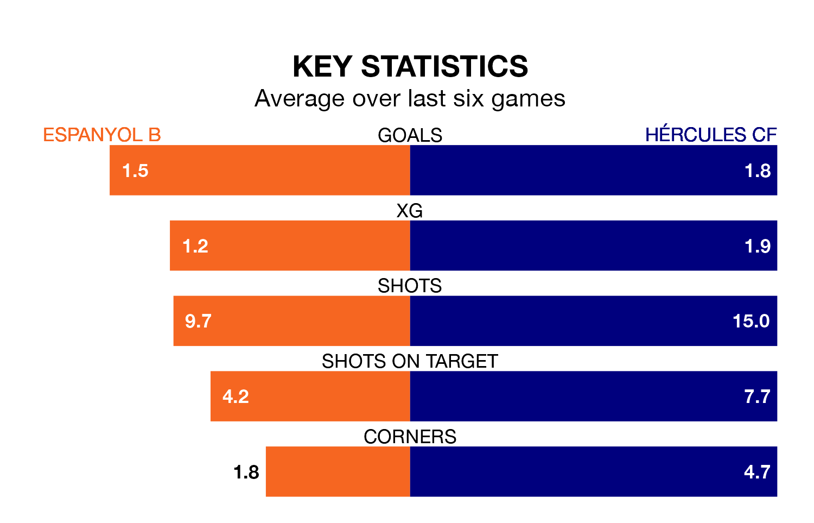

Hércules CF travel to Espanyol B on late Sunday in Segunda División RFEF Group 3.
The visitors come into the game on the back of a win in their last match, having beaten Lleida Esportiu 1-0 away.
Espanyol B, meanwhile, drew their last match, 1-1 against CE Europa.
Hércules are top of the table after 17 games, of which they have won 11 and drawn three, earning 36 points.
Espanyol B are 12 places behind the visitors in 13th, with five wins and five draws putting them on 20 points.
With 28 goals in 17 games so far this season, Hércules are the league's second-highest scorers with 1.6 goals per game. And they are conceding fewer than average, letting in 16 goals at a rate of 0.9 per game.
The home team, meanwhile, are below average scorers, with 1.1 goals per game, compared to a league average of 1.2. They have conceded 1.2 goals per game.
In the last five years, Espanyol B and Hércules have played each other on five occasions. Espanyol B won two of them and Hércules three.
On average, Espanyol B scored 1.2 goals and Hércules 1.4 in those matches.
Their last meeting was on September 3, when Hércules won 1-0 at home.
Espanyol B are in reasonable form in Segunda División RFEF Group 3, with three wins and two draws from their last six games.
And also with three wins and two draws over that period, Hércules's form is identical – they have both taken 11 points from 18.
Updated: 15:34, 08/01/24